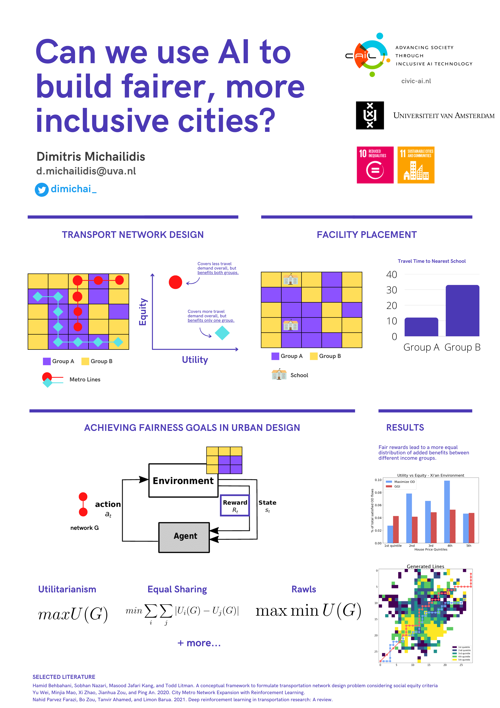

I am a PhD student at the Civic AI Lab of the University of Amsterdam.
In my research, I use Machine Learning to design inclusive, accessible and sustainable cities.
My current focus is on using Reinforcement Learning to explore the trade-off between utility and equity/fairness when designing public transport networks.
In the near future, I would like to investigate how would urban populations adapt to such changes in a city's public tranport networks.
My goal is to create a multi-agent framework that helps to envision alternative urban designs and their evolution in time.
Sounds interesting? Then please, get in touch!
I am also developing Greece in Figures, an organization that aims to explain complex socioeconomic phenomena in simple words & clean graphs, for the Greek audience.
Occasionally, I create interactive data stories on society and culture and post them on my blog Thousand Words.
You can reach me by email: d.michailidis at uva.nl, on Twitter or Linkedin.
d.michailidis at uva.nl
Civic AI Lab
University of Amsterdam
Science Park, Amsterdam, Netherlands